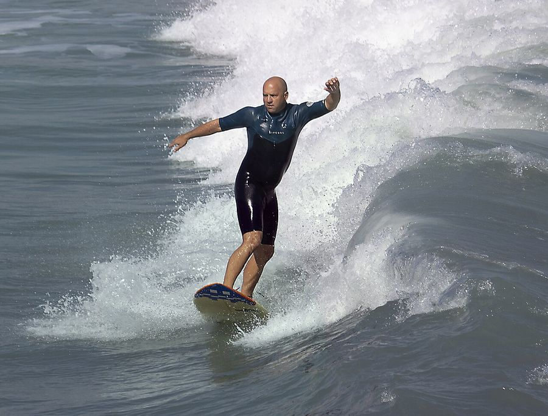
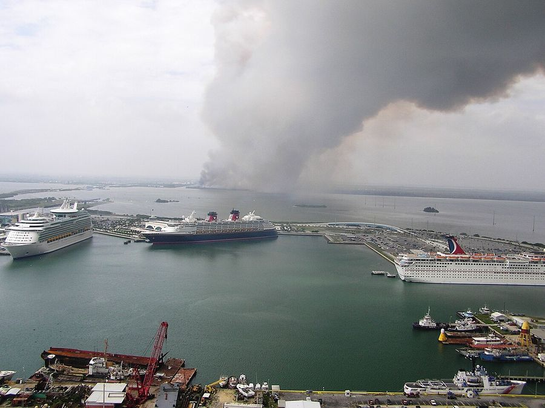

Port Canaveral
United States · 28.4100°N 80.6100°W

Bailes, Penny Rogo Related names: Stein, Martin, project architect Morrison-Knudsen Company, Inc, builder Perini Corporation, builder Paul Hardeman, Inc, builder URSAM (Max Urbahn) Roberts and Schaefer Seelye, Stevenson, Value and Knecht Moran, Proctor, Mueser and Rutledge · Public domain
Make this Notebook Trusted to load map: File -> Trust Notebook
Điểm tham quan
- **Kennedy Space Center Visitor Complex** — Space Shuttle *Atlantis*, Saturn V, Gateway: The Deep Space Launch Complex
- xem phóng tên lửa (SpaceX/ULA) not found

Cocoa Beach & Ron Jon Surf Shop
Merritt Island National Wildlife Refuge- Orlando ≈1 h (Walt Disney World, Universal)
Dệt may & smart textile
- - Đây là điểm **dệt kỹ thuật** thú vị nhất tuyến Mỹ: bộ đồ phi hành gia là sản phẩm dệt phức tạp nhất từng được chế tạo. **ILC Dover** (Frederica, Delaware) cung cấp spacesuit cho NASA từ 1965 — 250 chuyến bay, 6 lần hạ cánh Mặt Trăng, hơn 3.000 giờ đi bộ ngoài không gian **không một lần hỏng**; hiện thuộc nhóm do Collins Aerospace dẫn dắt làm spacesuit thế hệ mới cho ISS. - Bản sao **Starliner Advanced EVA Suit** đang trưng bày tại Gateway (Kennedy Space Center Visitor Complex) — xem được ngay trong ngày ghé cảng. - Bài toán vật liệu ở đây (chống cháy, soft goods khâu tay chính xác, lớp vải nhiều tầng có chức năng) là phiên bản khắc nghiệt nhất của cùng lớp vấn đề mà LOOMIA giải trong hồ sơ (LOOMIA có khách hàng là **US DoD**) not found